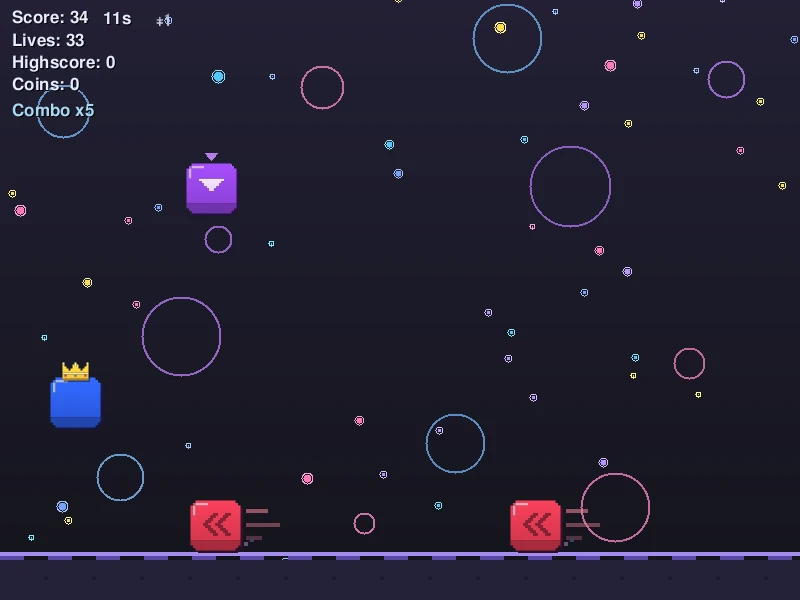
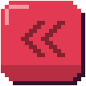
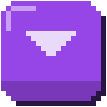
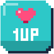
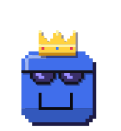
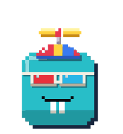
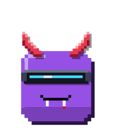
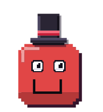

Blocks race towards you, crystals drop from above, and all you have is one jump button. How long can you last? Solo, two players on one keyboard, or online.

How to play
Still not mastered after a hundred rounds. Every block you clear scores, coins buy powers and cosmetics.

Red blocks race towards you, faster and faster. The speed lines show they're coming on their own.

On harder levels crystals drop from above. A small arrow shows where they'll land.

You have three lives. A 1-UP gives one back, so go for it when you can.
Features
Starts instantly, runs smooth on any monitor and keeps your progress across updates.
Create a room, send the code, both press ready. Versus: last one standing wins. Co-op: score together, and a 1-UP brings your partner back. Your player reacts instantly, even with ping.
Compare high scores, add friends, found clans and send messages, all inside the game.
Roll them in the shop and equip them before a round.
Head, eyes, nose and mouth each have their own slot. Plus eleven trails.




Rewatch every round and race against a ghost of your own best run.
Xbox, PlayStation and other gamepads work out of the box, two of them for the 2-player mode. Every key can be remapped.
Your own obstacles, values and modes as a small .lua file. Mods run in a sandbox and count separately.
Put a PNG or SVG into a folder called textures next to the game and your block, the obstacles or any cosmetic look different. Prefer the old look? Settings → More → Legacy graphics.
The game finds new versions at startup and installs them with one click. Your save stays where it is.
Screenshots
24 real screenshots straight from the game. Click any picture to see it big.
Download
Free for everyone. Pick your system. Every file comes straight from the newest GitHub release.
The macOS app is not notarized by Apple: right-click → Open the first time. Older versions, including the Python version, are in the archive.
FAQ
Yes. JumpNDodge is open source under the Apache 2.0 license, without ads or in-app purchases. Coins are only earned by playing.
No. The installer updates in place and the data folder stays. Even the old Python version fetches the new one by itself.
Settings → More → Legacy graphics: on. The game then draws everything like in version 5.2.
Yes. Create a folder called textures next to the game and put e.g. player.png, hazard.png, faller.png or oneup.png in it. Cosmetics are called cos_<name>, trails trail_<name>.
Windows and portable: in the data folder next to the game. Linux package: ~/.local/share/JumpNDodge/data. macOS: ~/Library/Application Support/JumpNDodge/data.
Online → Multiplayer, create a room and send your friend the code. Both of you need the same version. Want your own server? See Host a server.
Download it, beat your own high score, then beat your friends'.